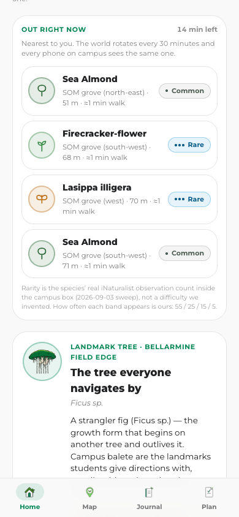
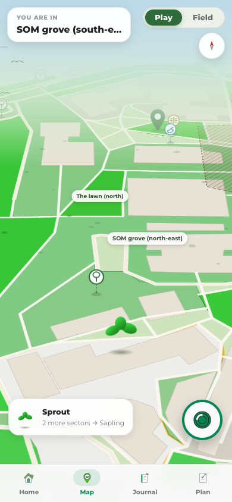
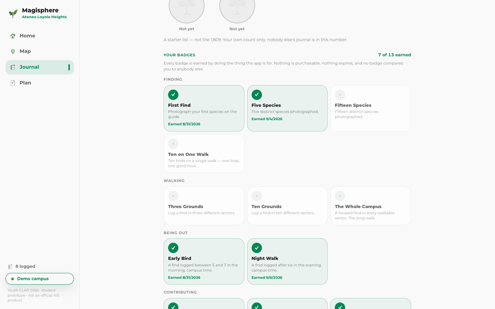
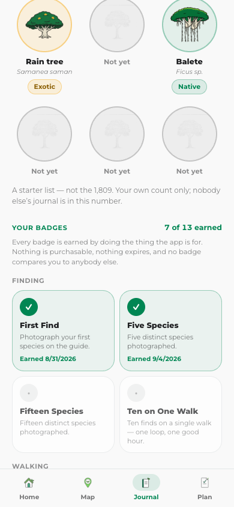

A campus-forest field guide you play by walking. A world of finds rotates across Ateneo every thirty minutes — walk to one, photograph it, and it enters your journal.


No account.
No app store.
Works offline.
A find within 40 metres opens the camera. You cannot log one from across campus.
From the species’ real iNaturalist count here. Seen once reads “Once on campus”.
Every phone on campus in the same half-hour sees the same finds.
Thirteen badges, all earned by doing the thing the app is for. Nothing purchasable.
Climate stress on Ateneo’s urban forest has three roots: infrastructure taking growing space, policy in which biodiversity loses to other priorities, and the one students can actually act on — awareness.
A community that cannot name its forest is not a constituency for that forest when a car park is proposed over it.
An Ateneo where every student can name what they walk under, and where the campus forest has a constituency that shows up for it.


Every logged find carries a species, a count, a coordinate, an accuracy and a time — exportable as CSV and GeoJSON. That pair, a count and a location, is exactly what the existing campus inventory does not have.
Photos and notes never leave the phone.
Ivan · Katherine · Sophia · Aleij Jill · Charisse · Clariz · Alfonso · Angelo
Youth CLAP 2026 cohort, Ateneo de Manila University